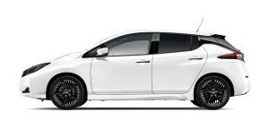
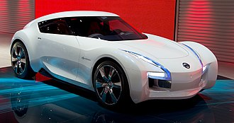
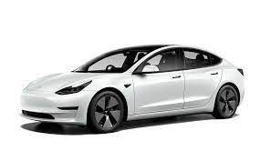
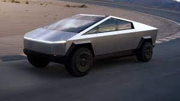
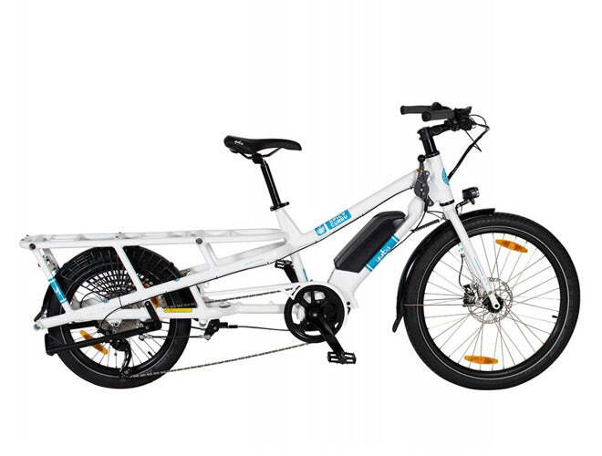
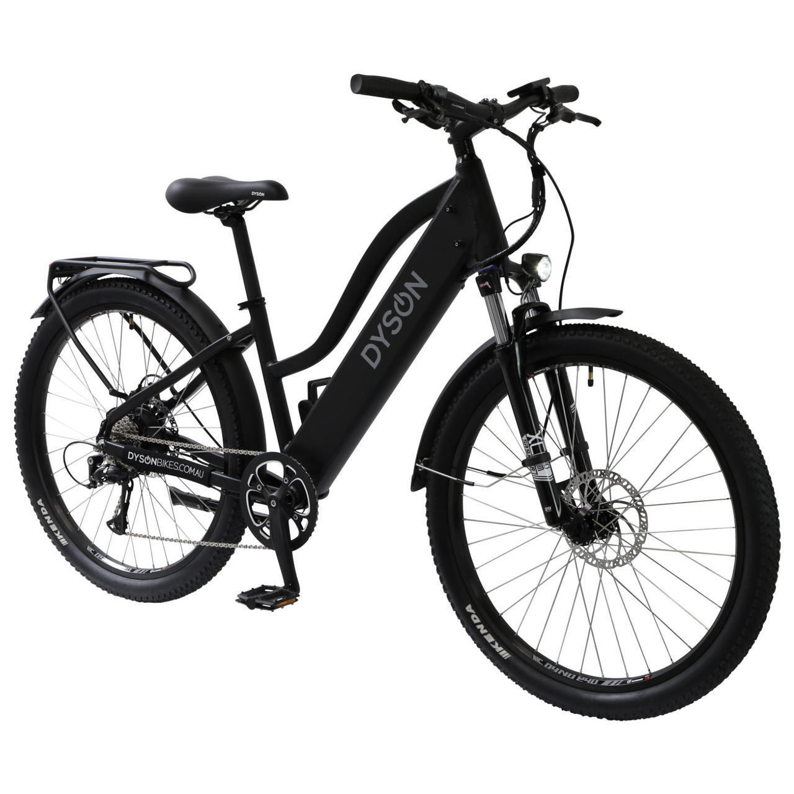
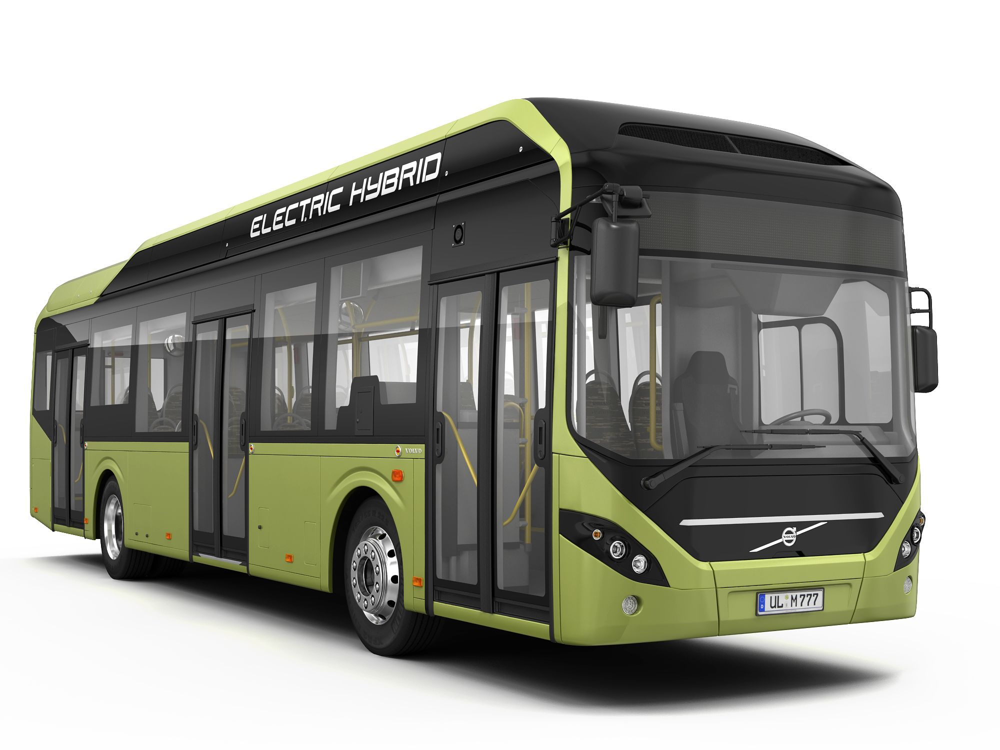
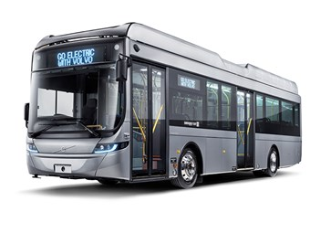

E-transport Company Section
History
Nissan has a long history of creating and offering specialised electric vehicles. The Prince Motor Company,
a business Nissan purchased in 1966, originally created the Nissan Laurel C130-EV, which was first made available in 1974.
A small number of Prince's electric cars, dubbed the Tama, were offered beginning in 1946.
Models
Nissan LEAF

- Number of doors: 5
- Acceleration 0-100 km/h: 6.9 to 7.9 seconds
- Battery charge time: 21 to 32h at 220V
- Battery: 40.6-62.1 kWh 350 V lithium-ion
- Cargo volume: 405 to 435 L, 1,176 L with seat area
- Dimensions: 4,490 mm L x 1,788 mm W x 1,530 mm H
Nissan Esflow

- Number of doors: 2
- Acceleration 0-100 km/h: less than 5 seconds
- Battery charge time: 24h at 220V
- Battery: 60 kWh 350 V lithium-ion
- Cargo volume: 405 to 435 L, 1,176 L with seat area
- Dimensions: 3,780 mm L x 1,700 mm W x 1,240 mm H
History
Tesla was founded in 2003 by a group of engineers who wanted to prove that people didn’t need to compromise to drive electric –
that electric vehicles can be better, quicker and more fun to drive than gasoline cars.
From there, Tesla designed the world’s first ever premium all-electric sedan from the ground up
Model S,X,Y,3 and Cibertrunk
Models
Model 3

- Number of doors: 4
- Acceleration 0-100 km/h: 6.1 seconds
- Battery charge time: 15-22 h at 220 V
- Battery: 60-82 kWh 360 V lithium-ion
- Cargo volume: 649 L
- Dimensions: 4,694 mm L x 1,849 mm W x 1,443 mm
Cybertruck

- Number of doors: 4
- Payload: 3500 lbs
- Towing: 7.5k to 14k lbs
- Battery: 200 kWh
- Dimensions: 5,840 mm L x 2,030 mm W x 1,900 mm H
History
It provided the IONIQ in 2016, the first vehicle with three electrified powertrains.
Hyundai is a pioneer in the field of future transportation because to this progressive spirit.
To meet the problems posed by climate change, the brand invested significantly—more
so than other automakers—in low-emission gasoline engines, hydrogen-powered fuel cells, and electrified vehicles.
The business unveiled the IONIQ in 2016, the first automobile in the world with three separate electrified engine options.
Models
Hyundai IONIQ Electric

- Number of doors: 4
- Acceleration 0-100 km/h: 7 seconds
- Battery charge time: 26 h at 220 V
- Battery: 38.3 kWh 319 V lithium polymer
- Torque: 295 N·m
- Dimensions: 4,470 mm L x 1,820 mm W x 1,475 mm H
Hyundai Kona Electric

- Number of doors: 4
- Acceleration 0-100 km/h: 7.6 to 9.9 seconds
- Cargo Volume: 332 L, 1,114 L with seat area
- Battery: 39.2-64 kWh 327-356 V lithium polymer
- Dimensions: 4,205 mm L x 1,800 mm W x 1,570 mm H
History
With a young family they wanted to spend more time with and after observing the growth of e-bikes while on a business trip to China,
the idea to establish their very own brand of electric bikes and live the lifestyle they had imagined was born.
Dyson Bikes first appeared in 2013.
Models
YUBA SPICY CURRY V3

- Tyres: Schwalbe Super Moto X 26″ and 20" rear
- Max Load Capacity: 200 kg
- Motor: Bosch Cargo Line Motor + PowerPack 500
- Battery: PowerPack 500 Wh
- Brake: Magura MT32 hydraulic disc brakes
MIXTE RTC ELECTRIC BIKE

- Tyres: Kenda 27.5 x 2.1" / Anti-puncture Slime tyre sealant / Low rolling resistance
- Range: 100+km achievable - Dependent on assistance level and riding conditions
- Motor: High-torque / 250W Nominal / Hub-Mounted / Maintenance-Free
- Battery: Lithium-Ion / 17.5Ah / 36V Nominal / 630 Wh / Fully protected / Lockable
- Brake: Hydraulic Tektro Mechanism / 180mm Rotors / Alloy levers / Auto power cut-off
History
Three prototype buses from the Volvo 7900 Electric (also known as Volvo 7900e) made their public debut in Gothenburg, Sweden,
in June 2015. In 2017, series production got under way.
Models
Volvo 7900

- Dimension: 14,0000 mm L x 2,500 mm W x 3,600 mm H
- Passenger capacity : 150
- Charging: 400 kW
- Capacity: 470 kWh
- Brake: Volvo disc brakes
Electronic Braking System (EBS5)
Anti-lock Braking System (ABS)
Volvo BZL Electric

- Dimension: 13,0000 mm L x 2,500 mm W x 3,600 mm H
- Passenger capacity : 140
- Charging: 300 kW
- Capacity: 470 kWh
- Brake: Volvo disc brakes
Electronic Braking System (EBS5)
Anti-lock Braking System (ABS)